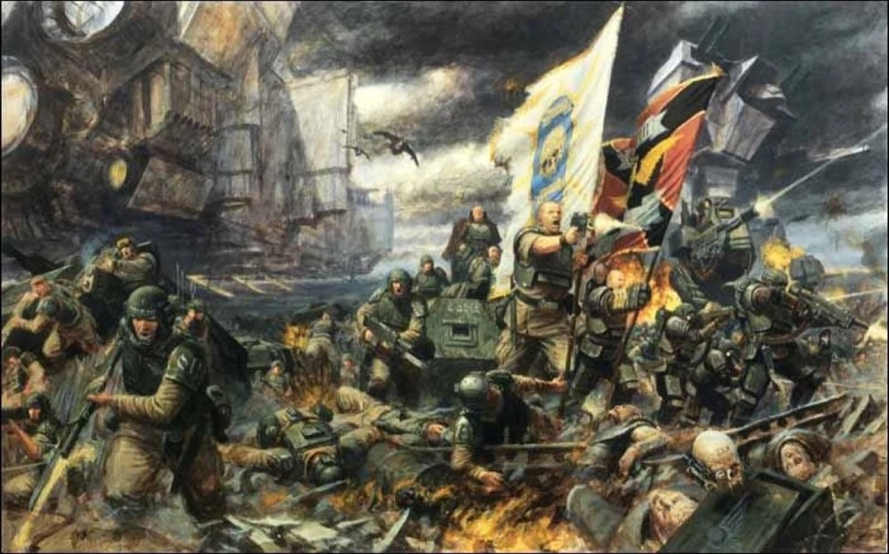

Military of the Imperium
| Military of the Imperium | |
|---|---|
| Armed forces | |
The Aquila, borne by every Imperial service Artwork © Games Workshop | |
| Overview | |
| Founded | Forces of the Great Crusade, c. 798.M30; reorganised c. 014–021.M31 after the Horus Heresy |
| Service branches | Astra Militarum; Imperial Navy; Adeptus Astartes; Adeptus Custodes; Sisters of Silence; Adepta Sororitas; Adeptus Mechanicus forces; Imperial Knights; Chambers Militant of the Inquisition; planetary defence forces; Adeptus Arbites; Officio Assassinorum |
| Headquarters | Imperial Palace, Terra; the five Segmentum Fortresses |
| Commander-in-chief | The Emperor of Mankind (in name); Roboute Guilliman, Lord Commander of the Imperium (in fact, since 999.M41) |
| Military leadership | Lord Commander Militant; Lord High Admiral; Captain-General of the Adeptus Custodes |
| Personnel | |
| Manpower | Raised by the Imperial tithe; the Space Marines, Mechanicus and Ecclesiarchy recruit for themselves |
| Active personnel | Uncountable; billions |
| Budget | The Imperial tithe |
| Imperium of Mankind Imperial Armed Forces High Lords of Terra | |
The Military of the Imperium, also called the Imperial military, the armed forces of the Imperium or the Imperial armed forces, is the whole body of fighting services of the Imperium of Mankind. It is not one army. It is a federation of separate institutions, each with its own origin, law, recruiting grounds and chain of command, united by the Aquila and by loyalty to the Emperor of Mankind. The largest are the Astra Militarum, the Imperium's mass army, and the Imperial Navy, which carries it between the stars. Beside them stand the Adeptus Astartes, the armies of the Adeptus Mechanicus, the Knight houses, the Adeptus Custodes, the warriors of the Inquisition and the Ecclesiarchy, and the garrison of every world.[1]
The division is deliberate. In the Great Crusade the Imperial Army, the Legions and the forces of Mars fought under a single Warmaster, and in 005.M31 that Warmaster turned half of them against the Emperor. The reforms that followed broke every great command into parts that no single officer could use against the throne. The price of that safety is slowness: the services cooperate by agreement, oath and precedent, and a campaign that needs several of them may wait years for the High Lords of Terra to settle who commands.[2][3]
Its strength cannot be stated. The Departmento Munitorum keeps records of regiments in the millions and puts the men under arms in the billions, but it also lists regiments that were destroyed centuries ago. In the Era Indomitus the forces of the Imperium are, for the first time since the Heresy, directed by one commander, Roboute Guilliman, whose Indomitus Crusade has drawn on every branch at once.[4]
History
[edit]Unification Wars
[edit]The first Imperial armies were raised on Terra in the Unification Wars, fought from the late 29th millennium to about 712.M30. The Emperor's spearhead was the Thunder Warriors, genetically enhanced soldiers made in great number and with great haste, and behind them marched the conscripted armies of the warlords who had been brought to heel. When the Wars ended the Thunder Warriors were purged as unfit for the peace, and the Emperor's attention turned to the creation of a more stable instrument.[2]
The Great Crusade
[edit]When the Great Crusade opened in c. 798.M30 the Emperor's forces fell into three arms. The twenty Space Marine Legions of the Legiones Astartes were its elite, led by their primarchs. The mass of the Crusade was the Imperial Army, the Excertus Imperialis, whose regiments and Navy ships were the Imperialis Auxilia and their fleets; they garrisoned what the Legions had won. The third arm was Mars. The Treaty of Olympus of 739.M30 had bound the Mechanicum to the Emperor, and it contributed its Taghmata, the Titan Legions, the Legio Cybernetica and, from the Knight worlds, the Knight houses. The Adeptus Custodes remained at the Emperor's side, and from the Triumph of Ullanor in 000.M31 the Crusade was commanded by the Warmaster, Horus.[2][5]
The Horus Heresy and the Codex reforms
[edit]The Heresy (005–014.M31) tore every service in two. Nine of the twenty Legions rebelled, with Titan Legions, Knight houses and much of the Imperial Army, and the Schism of Mars split the Mechanicum. The loyal remnant held the Imperial Palace in the Siege of Terra of 014.M31, and the Great Scouring that followed (014–021.M31) hunted the Traitors out of the Imperial worlds.[5]
In the years of reconstruction, roughly 014–021.M31, Roboute Guilliman wrote the Codex Astartes and carried out the Second Founding, dividing the Legions into Chapters of about a thousand warriors. The same logic was applied to the rest of the forces. The Army and the fleet were separated, with the division completed in the Time of Rebirth of the early 32nd millennium, so that no general could command the ships that carried him and no admiral the troops he landed. The office of Warmaster was abolished and never revived. The older Imperial records place these steps at different dates, and the reconciled chronology adopted here follows the sequence of the Codex's own writing.[3][6]
The Age of the Imperium
[edit]The ten thousand years that followed were the Age of the Imperium. The forces of Terra fought against the Orks in the War of the Beast (544–546.M32), which led to the founding of the Deathwatch; against the tyranny of Goge Vandire in the Age of Apostasy, which led to the Decree Passive and the creation of the Adepta Sororitas in 288.M36; and against the Tyranids, the Black Crusades and countless rebellions. Great commanders such as Lord Solar Macharius briefly united large forces for a single crusade, but each time the command dissolved at the leader's death, and each time the High Lords were careful that it should.[7][8]
The Indomitus Crusade and the Primaris reforms
[edit]
The opening of the Great Rift in 999.M41 and the return of Roboute Guilliman changed the military structure of the Imperium. As Lord Commander of the Imperium he took supreme command of the Imperial forces, the first individual to do so since the Heresy, and launched the Indomitus Crusade with fleets that combined Navy, Astartes, Mechanicus and Guard battlegroups. Lord Castellans and Lord Generals Militant were sent to the new fronts under his authority.[4][9]
The greatest change was the arrival of the Primaris Space Marines, the warriors of the Ultima Founding, created by Belisarius Cawl and issued to every Chapter that would accept them. Guilliman has also pressed to bring the Chapters, long forbidden to act in concert, into the crusade's battlegroups. The reforms met opposition from officials who feared that he was recreating the very concentration of power that the Codex had dispersed.[9]
Command and control
[edit]In Imperial doctrine every soldier serves the Emperor, and all oaths are sworn to him. Below the throne the instruments of command are the High Lords of Terra, twelve officers who sit as the Senatorum Imperialis. Several hold military office. The Lord Commander Militant represents the Astra Militarum, the Lord High Admiral of the Segmentum Solar the Navy, and the Captain-General of the Adeptus Custodes the Emperor's own guard. The Space Marine Chapters, the Mechanicus and the Inquisition answer to their own masters, whose cooperation is a matter of treaty and custom.[1]
Day-to-day administration lies with the Administratum, which holds the records of every regiment and every tithe. Its military arm is the Departmento Munitorum, which raises, equips, transports and assigns regiments of the Astra Militarum, and the Officio Militaris, which administers the officer corps, the schools and the Officio Prefectus. The Munitorum is often called the true government of the Imperial Army, since a regiment it has not recorded cannot be supplied, and one it has recorded may be supplied for centuries after it has died.[7]
Segmentum and sector commands
[edit]The Imperium is divided into five great segmentae, each with a Segmentum Fortress as its military base. Each segmentum is divided into sectors, and each sector has a battlefleet of the Imperial Navy, a standing garrison and a Lord Militant who commands the Astra Militarum there. A sector may also host a Chapter or fortress-monastery of the Adeptus Astartes, but that Chapter owes the sector no obedience beyond what its own commanders consider fitting.[10]
Crusades and Warmasters
[edit]When a large war requires a single hand, the High Lords appoint a supreme commander for the campaign. Such a commander has been styled Lord Solar, Warmaster of a crusade, or Lord General Militant, and holds authority over all forces committed to the theatre for the duration of the war. The title of Warmaster of the whole Imperium has not been used since the Heresy. A crusade's commander is usually accompanied by the Imperial Commissars, whose task is to keep his army loyal as much as to keep it disciplined.[11]
Branches
[edit]Astra Militarum
[edit]The Astra Militarum, long known as the Imperial Guard, is the Imperium's mass army, raised by tithe from nearly every world and numbering in the billions. Its regiments are normally drawn from a single planet, equipped by that world's industry and led by officers from its own gentry, so that a regiment from a hive world, a death world or a feral world differs from the next in dress, weapons and outlook. Famous regiments include the Cadian Shock Troops, the Catachan Jungle Fighters and the Death Korps of Krieg.[2]
The Guard fights as the Imperium's line infantry and armoured force. Its soldiers are poorly armoured and its casualties are enormous, but its tactics rely on weight of fire, artillery and the replacement of losses. Political officers of the Officio Prefectus, the commissars, enforce discipline, and the Militarum Tempestus provides elite storm troopers. Prisoners are conscripted into Penal Legions, and the auxiliaries, including Ogryn and Ratling abhumans, serve in their own units.[7][12]
Imperial Navy
[edit]The Imperial Navy is the void arm of the Imperium. It carries the Guard to its wars, covers its landings, escorts the convoys that bring the tithe to Terra and patrols the Warp lanes. The five great fleets of the segmentae are divided into sector battlefleets, each commanded by a Lord Admiral and answerable to the Lord High Admiral of its segmentum. Its ships are many kilometres long, built like cathedrals, and carry a Navigator to find the way through the Warp.[10]
The Navy also fields the Aeronautica Imperialis, whose fighters and bombers support the Guard from airfields as well as from carriers. The Navy and the Guard were a single service until the post-Heresy reforms, and they remain rivals as well as partners, each unable to fight a war without the other. The Navy's ships and battlefleets are described in the article on the service.[10]
Adeptus Astartes
[edit]The Adeptus Astartes, the Space Marines, are genetically engineered warriors raised in the Chapters. After the Second Founding the thousand Chapters, each about a thousand warriors strong, received the gene-seed of the original Legions, among them the Ultramarines, the Dark Angels, the Blood Angels and the Space Wolves. A Chapter is self-contained: it recruits from its own homeworld, builds its own fortress-monastery and ships, and is led by its own Chapter Master. It is the Imperium's shock force, committed where ordinary regiments would be destroyed.[3]
The Astartes answer to no outside commander and are called upon by request, not by order. They have often fought in the same campaigns as the Guard and the Navy, though a Chapter may withdraw from a war on grounds the High Lords may not question. The Primaris Space Marines of the Ultima Founding have joined every Chapter in the Era Indomitus.[3][4]
Adeptus Custodes
[edit]The Adeptus Custodes are the Emperor's personal guardians, the golden warriors of the Imperial Palace. They were made in the Unification Wars and serve under the Captain-General, answering to the Emperor alone. In the Heresy they held the Palace at the Siege of Terra, and since the Emperor's interment they have kept watch over the Golden Throne. Their numbers are small, and no Custodian can be spared lightly. They leave the Palace only on the Emperor's work, though in the Era Indomitus they have done so in unprecedented numbers.[2]
Sisters of Silence
[edit]The Sisters of Silence are the null-maidens, women whose pariah gene shields them from the Warp and from psychic attack. They work alongside the Custodes and serve as the Imperium's answer to rogue psykers and sorcerers. They live in a fortress on Terra and ride aboard the Black Ships that carry psykers to the Golden Throne. They guard themselves jealously and speak in a hand-language of their own.[8]
Adepta Sororitas
[edit]The Adepta Sororitas, the Sisters of Battle, are the military orders of the Ecclesiarchy. In 288.M36 the Decree Passive of the reformer Sebastian Thor forbade the Ecclesiarchy to keep "men under arms", after the Frateris Templar of Goge Vandire had been used to terrorise the Imperium. The Daughters of the Emperor, being women, were deemed outside the ban, and became the Orders Militant of the Adepta Sororitas. The orders are divided into Orders Militant, which fight the Ecclesiarchy's wars, and Orders Hospitaller and Dialogus, which care for the wounded and carry the faith.[8]
Adeptus Mechanicus forces
[edit]The armies of the Adeptus Mechanicus answer to the Fabricator-General and the lords of the forge worlds, not to the High Lords. The Skitarii are the cybernetic infantry of the forges, raised to guard Mechanicus holdings and to take part in the Mechanicus's campaigns, sometimes beside the Guard. The Titan Legions, the Collegia Titanica, field the god-engines, the largest war machines of the Imperium, each bonded to a Princeps who commands it. The Legio Cybernetica controls battle-automata and the hosts of servitor-controlled machines.[13]
The Mechanicus lends these forces to the Imperium by treaty, the Treaty of Olympus being the oldest, and may recall them. A Titan Legion marching with a crusade commands respect that no regiment commands,.[13]
Imperial Knights
[edit]The Imperial Knights are the households of the Knight worlds, noble houses that pilot walkers called Knights. Those sworn to the Imperium are the Questor Imperialis, and those sworn to Mars are the Questor Mechanicus. Their houses were bound by oath during the Great Crusade, and are summoned to war by the oath-bonds that were made then.[13]
Chambers Militant of the Inquisition
[edit]The Inquisition fields its own warriors through the Chambers Militant of its Ordos. The Grey Knights are the Chamber Militant of the Ordo Malleus, a Chapter founded late in the Heresy and devoted to the hunting of daemons; the Deathwatch is the Chamber Militant of the Ordo Xenos, founded after the War of the Beast, whose kill-teams are drawn from many Chapters. The Ordo Hereticus commands the Adepta Sororitas on certain duties. Each Inquisitor may also command a retinue of his own, and may requisition any force of the Imperium as he sees fit.[14]
Planetary Defence Forces
[edit]Every world maintains a planetary defence force, the local garrison under the command of its Planetary Governor. These forces are the Imperium's first line, raised from the world's own people and equipped by its industry, and are very variable in quality, from the hive guard of a hive world to the half-trained militia of an agri-world. A defence force's soldiers can be transferred to the Astra Militarum when the world's tithe of troops is called.[1]
Adeptus Arbites
[edit]The Adeptus Arbites enforce Imperial law, as opposed to local law. Its precinct-fortresses stand on thousands of worlds, garrisoned by Arbitrators with heavy armour and shock maces. They are police by function but military by equipment: in the event of a rebellion by a planetary governor the Arbites are expected to hold their fortresses and to destroy the rebel regime's records and command centres, and a number of such rebellions have been put down by their prompt action.[15]
Officio Assassinorum
[edit]The Officio Assassinorum is the Imperium's assassin guild, a body of secret temples, each teaching a different art of killing: the Vindicare, the Callidus, the Eversor and the Culexus among them. Its Grand Master of Assassins sits on the High Lords' council. An assassin is sent only when other measures have failed, on the authority of a High Lord, and the Officio does not explain its kills.[15]
Rogue Traders
[edit]The Rogue Traders hold a Warrant of Trade granted in the Great Crusade, which lets them trade, explore and wage war beyond the Imperium's borders. Each commands his own fleet, bodyguard and household troops, and the largest dynasties field forces larger than a sector battlefleet. They are not part of the Imperial command structure, and the Navy and the Guard ask their help rather than demand it.[16]
Recruitment and the tithe
[edit]
The Imperium pays for its wars in people. Every world owes the Imperial tithe, assessed by the Administratum according to its classification: a share of its produce and materials, and a number of its people as soldiers, sailors and psykers. A world that fails to pay may be visited by the Adeptus Arbites, the Inquisition or an Astartes Chapter. The Departmento Munitorum sets the levy for soldiers by regiment, and the planet decides whom to send.[7]
The services outside the tithe recruit for themselves. The Space Marines choose from the young of their recruiting worlds, who must survive implantation of the gene-seed. The Mechanicus takes its Skitarii from its forge worlds and its adepts from the children of its enclaves. The Sisters of Battle come from the Schola Progenium and Ecclesiarchy convents. Many of the Imperium's officers are produced by the schola system and by the nobility of the worlds from which regiments are drawn.[3][8]
Logistics
[edit]Supplying the Imperial forces is among the Administratum's largest tasks. The Departmento Munitorum assigns each regiment its equipment, ammunition and rations, and the Navy carries them. Transit is slowed by the need for a Navigator and by the Warp, whose storms may delay a convoy by years. A regiment may be ordered to a war and arrive after it has ended, or be ordered to a world that has been lost in the interval.[7]
Much of the Imperium's war material is made on the forge worlds, which are the Mechanicus's alone; the Munitorum can request, but not command, their output. The Imperium's distances also mean that most regiments must live off the world they are sent to, and a campaign's supply is often settled by the sector's own agri-worlds. Since the Great Rift the supply of the Imperium Nihilus has been cut off from Terra almost entirely, and forces there fight on whatever they hold.[4]
Doctrine
[edit]The doctrine of the Imperial forces is not written in one place. The Tactica Imperium is the principal manual of the Astra Militarum, setting out the organisation of regiments, the duties of commissars and the use of artillery and armour. Its logic is the logic of the post-Heresy reforms: no officer is trusted with all arms, and every force is meant to be dependent on another.[6]
The Space Marines follow the Codex Astartes in whole or in part. It sets out the organisation of a Chapter into ten companies, the arms and equipment of each squad, and the manner in which a battle should be fought. Some Chapters, the Space Wolves, the Blood Angels and the Dark Angels among them, keep to doctrines of their own, and the Black Templars follow the Codex only in part. The Mechanicus's practice is a matter of rites, and that of the Sisters a matter of faith.[3]
Ranks
[edit]Each service keeps its own ranks, and there is no formal equivalence between them. The table gives rough correspondences used by the Munitorum when forces are brigaded together.
| Level | Astra Militarum | Imperial Navy | Adeptus Astartes | Adepta Sororitas |
|---|---|---|---|---|
| Supreme | Lord Commander Militant | Lord High Admiral | Chapter Master | Abbess Sanctorum |
| Theatre | Lord Solar, Lord General Militant | Lord Admiral | Captain of a company | Canoness Superior |
| Formation | Colonel | Captain of a ship | Sergeant | Canoness |
| Unit | Lieutenant, sergeant | Lieutenant | Veteran sergeant | Sister Superior |
| Rank and file | Guardsman | Rating | Battle-brother | Battle Sister |
A commissar of the Officio Prefectus holds a rank that outranks, in matters of discipline, any officer of the regiment to which he is attached. The Space Marines and Custodes have their own hierarchies of rank that do not correspond to those of the Astra Militarum.[7]
Major wars
[edit]| Date | War | Notes |
|---|---|---|
| Late M29 – c. 712.M30 | Unification Wars | The Emperor unites Terra. |
| c. 798.M30 – 005.M31 | Great Crusade | The Imperium spreads through the galaxy. |
| 005–014.M31 | Horus Heresy | Half the forces of the Imperium rebel. |
| 014.M31 | Siege of Terra | The Palace holds, and the Emperor is entombed in the Golden Throne. |
| 544–546.M32 | War of the Beast | An Ork Waaagh! overruns Terra's approaches; the Deathwatch is founded. |
| 322–384.M39 | Angevin Crusade | A crusade of conquest in the Segmentum Pacificus. |
| 392–399.M41 | Macharian Crusade | Lord Solar Macharius reunites a third of the galaxy. |
| 139–160.M41 | Gothic War | Battlefleet Gothic faces the Twelfth Black Crusade. |
| 444.M41, 941–943.M41, 998.M41 | Wars for Armageddon | Three Ork invasions of Armageddon. |
| 755.M41 onward | Sabbat Worlds Crusade | A crusade against the forces of Chaos. |
| 813–830.M41 | Siege of Vraks | A siege of attrition against a rebel world. |
| 901–913.M41 | Badab War | A civil war among Space Marine Chapters. |
| 999.M41 | Fall of Cadia | The Thirteenth Black Crusade destroys the fortress world. |
| c. 000.M42 onward | Indomitus Crusade | Guilliman's reconquest after the Great Rift opens. |
Timeline
[edit]| Date | Event |
|---|---|
| Late M29 – c. 712.M30 | The Emperor raises the first armies in the Unification Wars, led by the Thunder Warriors. |
| 739.M30 | The Treaty of Olympus binds the Mechanicum's forces to the Imperium. |
| c. 798.M30 | The Great Crusade opens. The Legions, the Imperial Army and the Mechanicum take the field. |
| 000.M31 | Horus is named Warmaster at the Triumph of Ullanor. |
| 005–014.M31 | The Horus Heresy divides every service of the Imperium. |
| c. 014–021.M31[a] | Roboute Guilliman writes the Codex Astartes; the Second Founding divides the Legions into Chapters. |
| Early M32 | In the Time of Rebirth, the Astra Militarum and the Imperial Navy become separate services. |
| 544–546.M32 | The War of the Beast; the Deathwatch is founded. |
| 288.M36 | The Decree Passive creates the Adepta Sororitas. |
| 392–399.M41 | The Macharian Crusade. |
| 999.M41 | The Great Rift opens and Cadia falls. Roboute Guilliman is named Lord Commander of the Imperium. |
| c. 000.M42[b] | The Indomitus Crusade begins, and the Primaris Space Marines join every Chapter. |
See also
[edit]Notes
[edit]- ^ Estimated from the sequence of events after the Siege of Terra; Imperial chronicles give the completion of the Codex as c. 019.M31 in some records.
- ^ Estimated; the Indomitus fleets keep different chronologies.
References
[edit]- ^ a b c Warhammer 40,000: Core Book (9th Edition), pp. 20-23, 42-43, 45-46, 60. Games Workshop.
- ^ a b c d e The Horus Heresy - Book One: Betrayal (Imperial Armour), pp. 10-11, 15-18, 21-25.
- ^ a b c d e f Codex: Space Marines (5th Edition), pp. 6-7. Games Workshop.
- ^ a b c d Warhammer 40,000: Rulebook (8th Edition), pp. 22-39. Games Workshop.
- ^ a b Warhammer 40,000: Rulebook (6th Edition), pp. 134-154, 158-177, 180-183, 189-191. Games Workshop.
- ^ a b Rennie, Gordon. Execution Hour (novel). Black Library. Abnett, Dan. First and Only (novel). Black Library.
- ^ a b c d e f Codex: Imperial Guard (6th Edition), pg. 6. Games Workshop.
- ^ a b c d Black Crusade: Core Rulebook (RPG), pp. 20-27, 29.
- ^ a b Haley, Guy. Dark Imperium (novel). Black Library, Ch. 9 "Imperator Gloriana," pp. 96-97.
- ^ a b c Warhammer 40,000: Rulebook (3rd Edition), pp. 98-115. Games Workshop.
- ^ McNeill, Graham. Fulgrim (novel). Black Library, pp. 47, 51, 197.
- ^ Codex: Militarum Tempestus (6th Edition), pp. 5-13. Games Workshop.
- ^ a b c Dark Heresy Core Rulebook (RPG), pp. 246-264.
- ^ Deathwatch: Core Rulebook (RPG), pp. 284-300.
- ^ a b Warhammer 40,000: Rogue Trader (1st Edition), pp. 132-135, 138-142, 144-148. Games Workshop.
- ^ Rogue Trader: Core Rulebook (RPG), pp. 302-315.